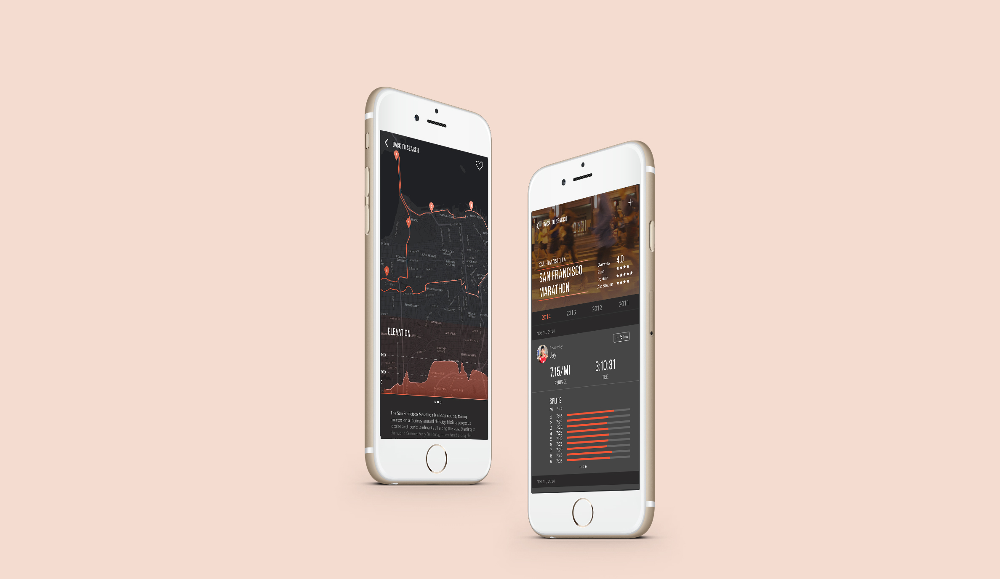
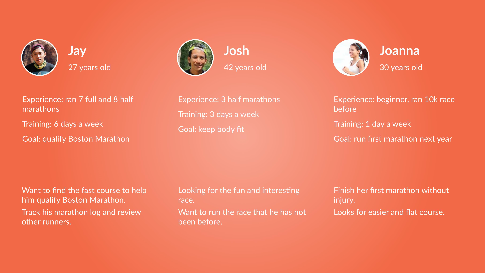
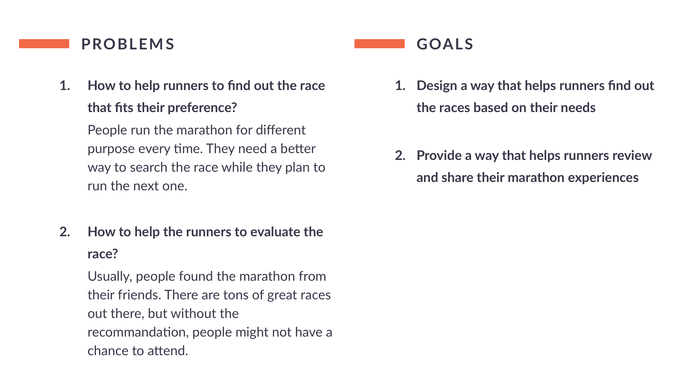
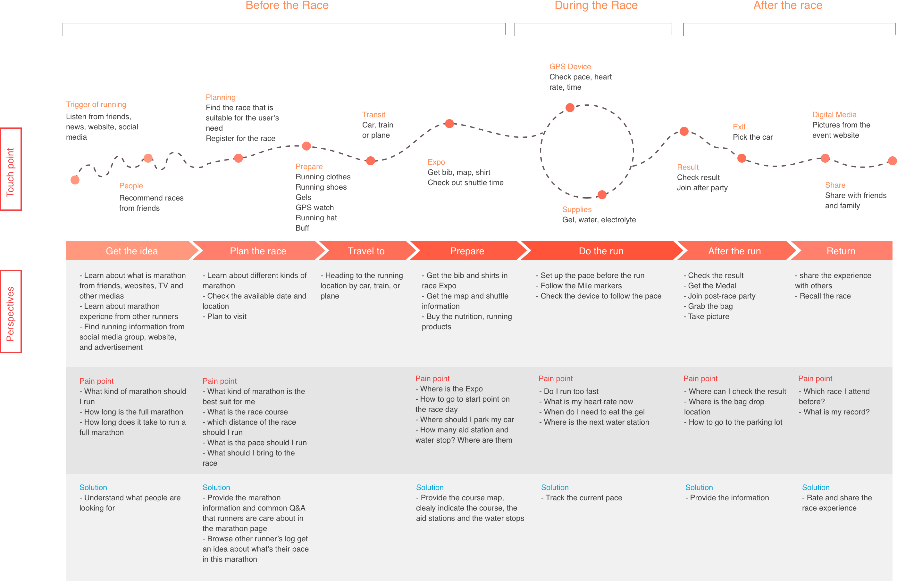
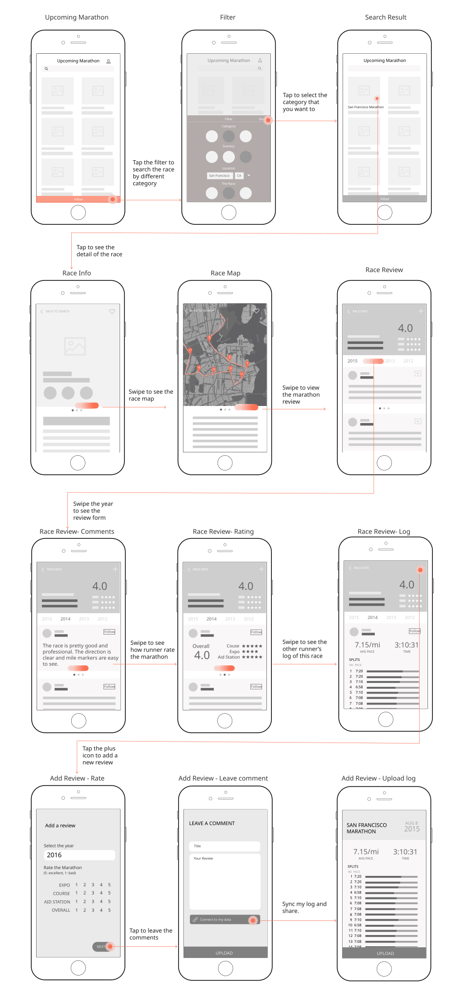
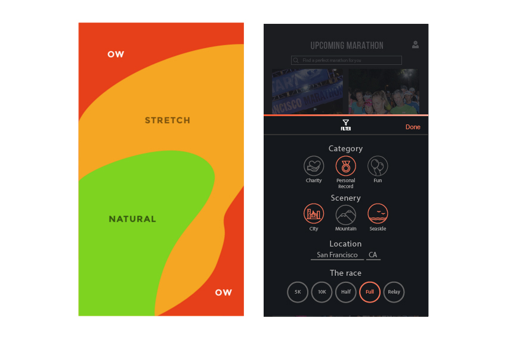
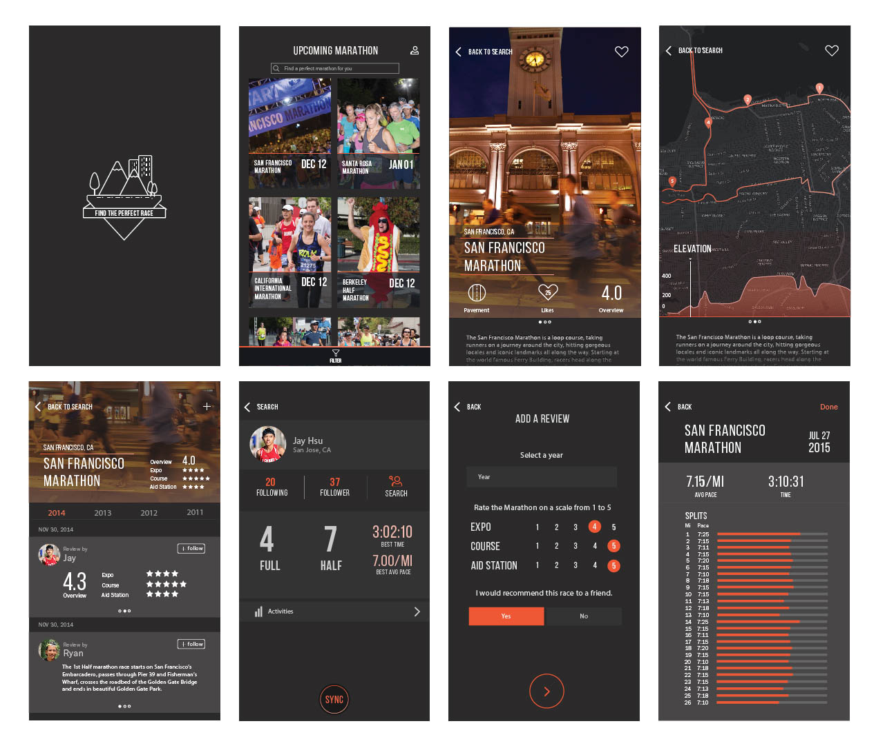

Product Design, Interaction Design
Kahuna
Apr. 2017 to Aug. 2017
Running a full marathon is one of the most challenging and rewarding events that any of us will experience. 26.2 miles is a long way, but more and more people are taking on the challenge each year. This project was inspired by one of my friends, Jay. He loves running and the great thing is he finally qualify the Boston Marathon last year.
When I dug into the marathon world, I found that most of the runners seek for the records, including personal and age group. Qualifying for the Boston Marathon is a dream goal for many runners.
“I am always looking for a flat and downhill race course because the finish time is really important for me.”- Jay Hsu
There are plenty of tracking apps out there to help runners record their training log, such as Strava, Run Keeper, etc. However, there is no better solution to gather marathon information for runners and help them to find a race that fits their preferences. Thus, I would like to create a lightweight product that can help runners find their perfect race and share their experiences.
In order to identify the pain points in the user journey I have adopted the following techniques:
I interviewed with my friends and reached out to 10 runners from a running group and invited them to chat about what is their marathon experience, how they plan their race and how to find the race to fit their needs.

Persona Research

I developed this journey map and mapped the whole experience from planning to finishing the race and tried to find out the design opportunities at different stages.

Experience Map
Based on the result, it can be seperate into three parts:
After a series of potential user interviews and market research, I defined the product as a race review tool to help runners find the race and share their experience. I started with the low fidelity mock-ups, which were used for the later user validation

UX Flow
Most of us hold our phones in the following way — with the bottom of the thumb anchored on the lower-right-hand corner. For that reason, I decided to put the filter function at the bottom of the screen and created a serious of icons. The advantage of these are users can accomplish the search task in their thumb zone and no need to switch to two handed.

Iphone 6 thumb zone v.s. application UI
A research from Steve Hoober, a mobile expert, found that people held their phones in the following ways:
Handedness figures were also instructive:

Selected hi-fidelity mobile screens
{kind=link}
{kind=link}
{kind=link}
{kind=link}
{kind=link}
{kind=link}